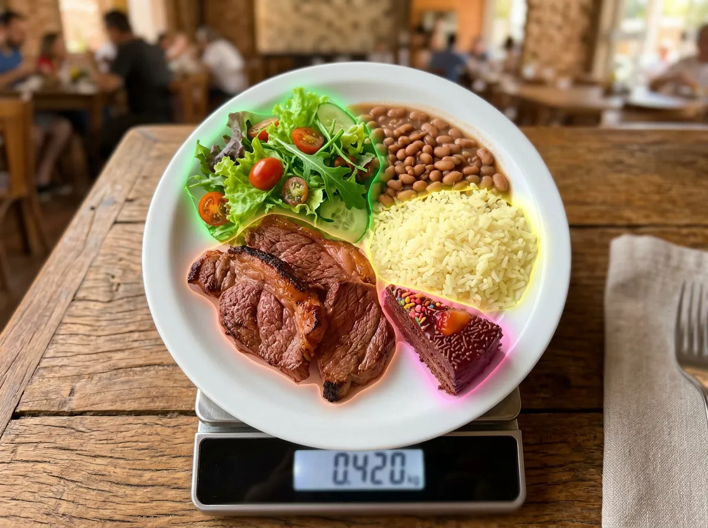
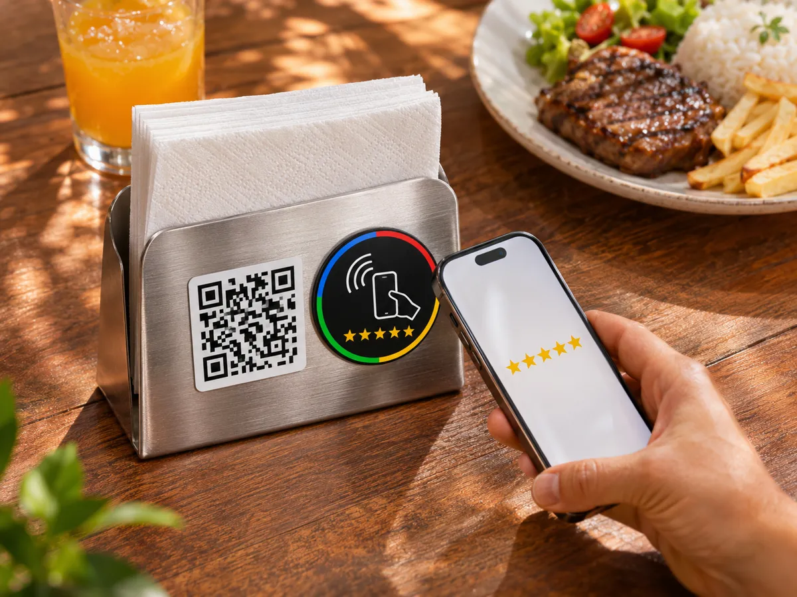

Mesas com relógio
A câmera vê a mesa ocupada. Se ninguém atende em 1–2 minutos (configurável), o metre da praça recebe o alerta. Mesa que saiu e não foi limpa também avisa.
Montagem sobre quadro real da câmera da Bovinu's (rostos já borrados na origem): o estado de cada mesa vem do nosso modelo.
Mix do prato
Uma foto no momento da pesagem mostra a proporção de carne, carboidrato, salada e sobremesa — junto do peso que o sistema já registra.
Buffet que se avisa
Câmera sobre as cubas conta reposições e mostra o que mais sai e o que acaba cedo, hora a hora.
Ilustração sobre quadro real: o nível de procura de cada seção foi marcado à mão, para mostrar a ideia. Não é medição.
Avaliação sem atrito
QR code na mesa, junto aos guardanapos, abre direto a avaliação no Google. Sem brinde, como a política do Google exige. O código real depende do ID do local da Bovinu's no Google, que a casa precisa fornecer.



